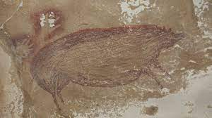
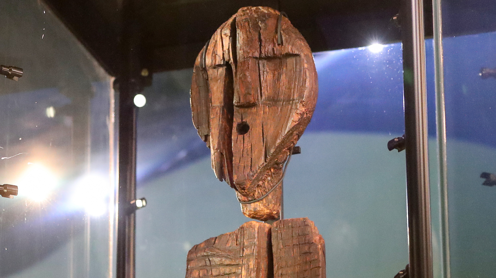

Painting is a visual form of art that usually consists on the application of paint on a support - canvas, paper, glass, walls, etc. There's many different tools - most commonly used are spatulas, brushes, pens, pencils - that can be used to apply paint, color or pigment to accomplish different types of paintings. It fundamentally consists on viewing figures on a two dimensional matrix.
Although these are very popular methods nowadays, painting as a form of art has evolved for many years, going back thousands of years to which scientists and researchers found a pig ilustrated in a cave and came to the conclusion that these cave paintings found in Leang Tedongnge, Indonesia, are at least 45500 years old. Since they haven't invented paint these many years ago, they mostly used minerals to carve and leave colorful marks on the surface. Theres many other paintings that were found in caves, but all of them express the same thing - hunting - mostly big animals and barely any humans are in those drawings that aren't on hunting duties.
Source of the image: link
Throughout human evolution, as religion rose in popularity all around the world, so did religious art, like Christian art, Hindu art, Islamic art and others. During these periods, many paintings were created with the objective of stimulating the mind of those that worship their Gods and Saints, since having a humanlike form was easier to perceive and understand them.
Source of the images: link a) , link b)
Different sculpting techniques developed over the centuries allowed people to preserve the memory of their ancestors, perpetuate the achievements of previous generations, and were also an artistic expression of their identity. Monument sculpture has become, next to painting, a way to show the human body, it served to portray the faces of famous people, it allows sculptors to express their feelings and values that are valuable to them.
There are several types of classification of sculptures. They can be divided due to the shape for example full sculptures and reliefs. They can be free-standing or group sculptures, depicting heads, busts or full figures. A separate category are zoomorphic sculptures that present real or fantastic animals. The next group of sculptures are elements of flora, but also abstract forms created in the author's imagination.
Creating wood sculptures is a popular carving technique that allows you to use the individual characteristics of a given piece of wood. Since there are no two identical branches or boughs, each woodwork is unique and difficult to imitate. One of the oldest wood carvings is believed to be the Shigir Idol, found near Yekaterinburg.
Source of the image: link
Stone is one of the oldest sculptural materials. Stone sculptures are usually made of marble or sandstone, rarely granite or other types of stone. Sometimes they are made on the basis of a clay cast. The stone allows to show a given figure or object in three dimensions, emphasize individual facial features or details that the author of the sculpture wanted to emphasize. Among the most famous stone sculptures that have survived to modern times are Venus from Milo, as well as the Vatican Pieta and Michelangelo's David.
Architecture is the science and art of designing, as well as constructing and then making various spatial structures. Architecture can also be called the totality of material objects that are the work of man and are permanently associated with a given area. These facilities are to meet the personal and social needs of a person. An element of architecture can be a sculpture placed in a park, a bench in a garden, a sidewalk, a house, a bridge, a road, an overpass and other objects of this type.
Since antiquity, the goal set before the creators was that architectural objects affect people, hitting their sense of beauty, and the aesthetic elements of the created works have always been an important part of them. Over the centuries, styles prevailing in architecture have changed. Objects of exceptional artistic value are part of the cultural heritage and are considered masterpieces. Historical civilizations are often known mainly for their architectural achievements. Buildings such as the pyramids in Egypt and the Roman Coliseum are cultural symbols and are an important element of the nation's consciousness. Cities, regions and cultures are identified with architectural monuments.

Source of the images: link a) , link b)